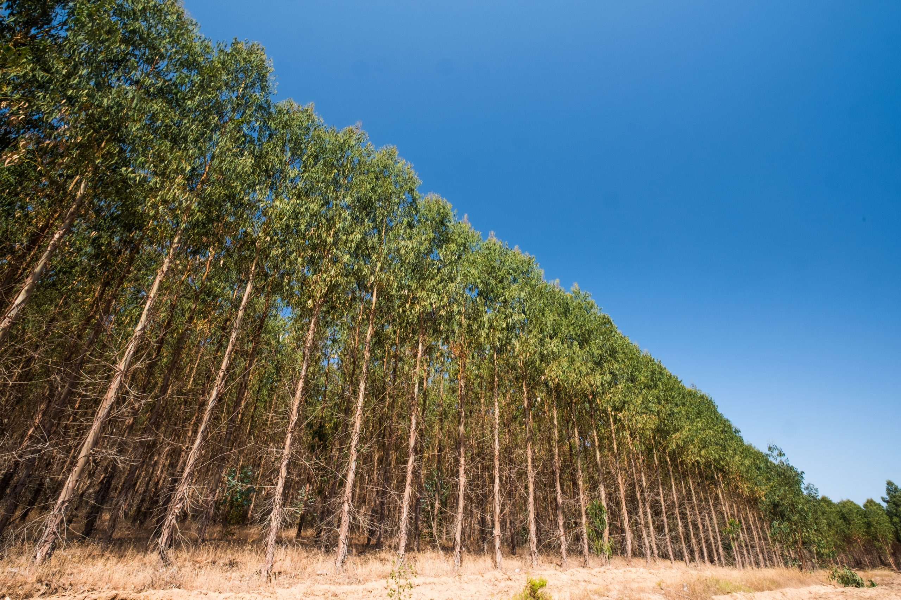
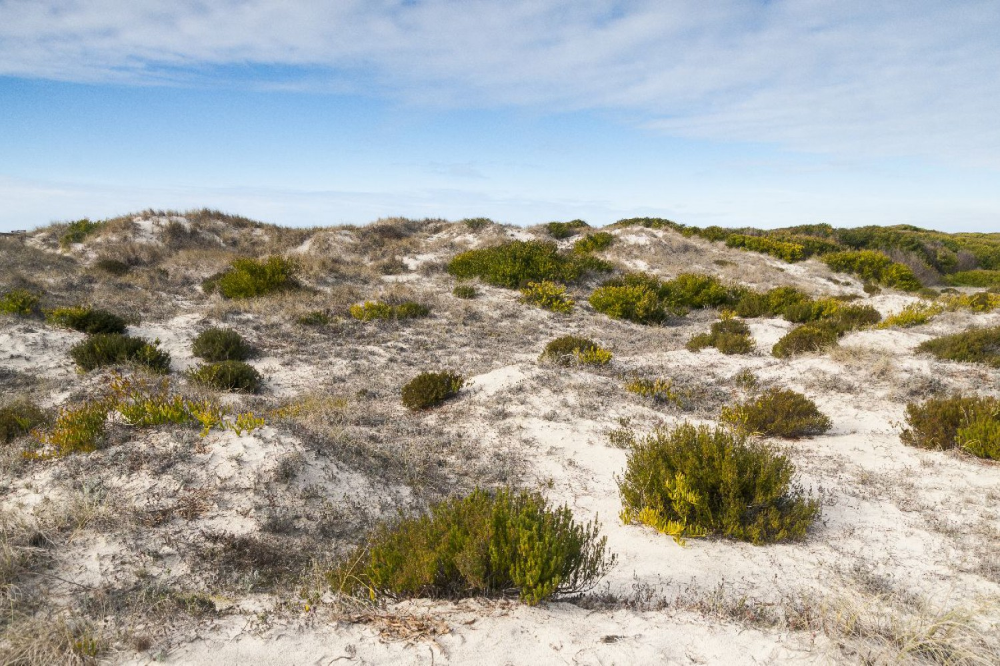

Portugal possui uma grande diversidade de formações vegetais, cada uma com características únicas que se adaptam às diferentes condições climáticas e geográficas do país. Entre as principais formações, destacam-se a floresta mediterrânea, os pinhais e eucaliptais, as florestas ripícolas, as vegetações das dunas e zonas costeiras, e as plantas endêmicas, cada uma desempenhando um papel crucial para a biodiversidade e a economia.
Flora de Portugal
Floresta Mediterrânea: A floresta mediterrânea é uma das mais típicas em Portugal, predominando no sul do país. Composta por árvores como o sobreiro (Quercus suber) e a azinheira (Quercus rotundifolia), esta floresta tem um valor ecológico e econômico significativo, principalmente devido à produção de cortiça, um dos principais produtos exportados de Portugal. Além disso, o subbosque é rico em arbustos como a esteva (Cistus ladanifer) e o medronheiro (Arbutus unedo), adaptados às condições de seca e fogo, que são comuns nesta região.
Pinhais e Eucaliptais: Os pinhais e eucaliptais ocupam uma grande parte do território português. O pinheiro-bravo (Pinus pinaster) é resistente à seca e ao solo pobre, sendo importante para a indústria da construção e papel. O eucalipto (Eucalyptus globulus), embora com crescimento rápido, gera controvérsias devido ao seu impacto na biodiversidade local e no consumo excessivo de água. Ambas as formações são vulneráveis a incêndios, especialmente em períodos de calor intenso.
Florestas Ripícolas e Árvores Autóctones: As florestas ripícolas, localizadas ao longo de rios e ribeiras, são essenciais para a preservação dos ecossistemas aquáticos e terrestres. Árvores como o freixo (Fraxinus angustifolia), o salgueiro (Salix alba) e o olmo (Ulmus minor) desempenham um papel crucial na proteção contra a erosão e na regulação do ciclo da água. Além disso, as árvores autóctones de Portugal, como o carvalho (Quercus robur) e o azevinho (Ilex aquifolium), são fundamentais para a biodiversidade local.

Vegetação das Dunas e Zonas Costeiras: A vegetação das dunas e zonas costeiras de Portugal é composta por espécies adaptadas às condições extremas, como a alta salinidade e os ventos fortes. Plantas como a erva-de-santa-maria (Ammophila arenaria) e o pinheiro-bravo formam ecossistemas que protegem as zonas costeiras contra a erosão. No entanto, as dunas estão ameaçadas pela urbanização e pelo turismo massivo, além das alterações climáticas.
Plantas Endêmicas: Portugal é lar de várias plantas endêmicas, como o trevo-das-praias (Lotus cytisoides) e a giesta-do-Gerês (Genista arcuata), que são adaptadas às condições locais e essenciais para a biodiversidade. No entanto, essas plantas enfrentam ameaças como a urbanização, as alterações climáticas e a competição com espécies invasoras.